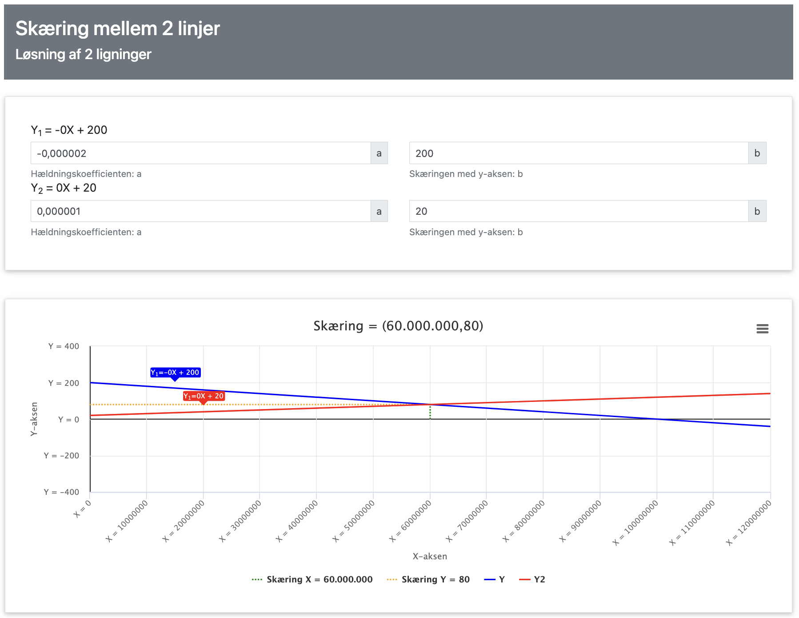
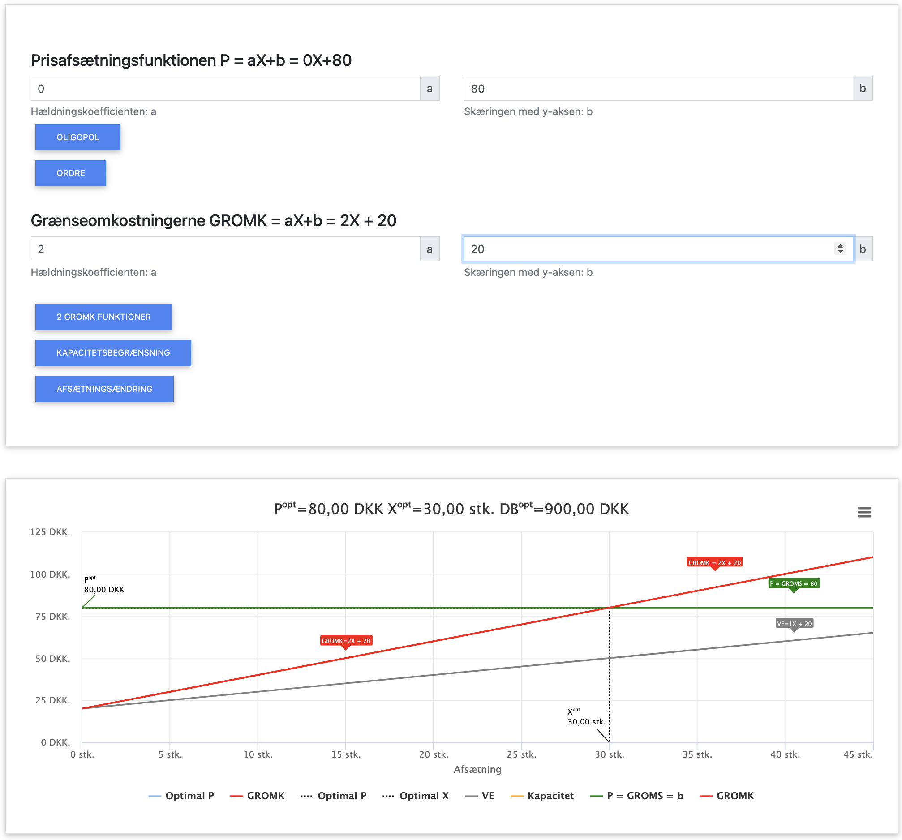
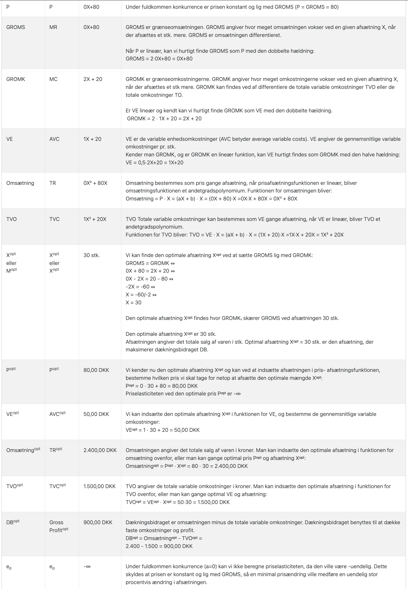
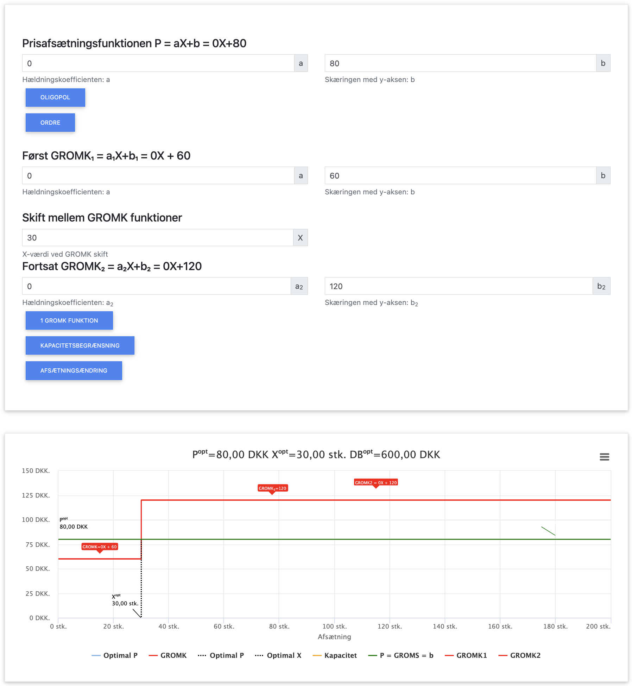

Fuldkommen Konkurrence

Fuldkommen konkurrence er en markedsform, hvor mange virksomheder sælger identiske produkter, ingen har markedsmagt, og der er fuld information. På et sådant marked er virksomhederne pristagere, hvilket betyder at de ikke selv kan påvirke markedsprisen.
I dette kapitel benytter vi følgende forkortelser:
- P = Pris
- X = Mængde
- OMS = Omsætning (P × X)
- VO = Variable omkostninger (VE × X)
- FO = Faste omkostninger
- VE = Variable enhedsomkostninger (VO / X)
- GROMS = Grænseomsætning (OMS' = ændring i omsætning ved ændring i afsat mængde X)
- GROMK = Grænseomkostninger (TO' = ændring i totale omkostninger ved ændring i afsat mængde X)
- DB = Dækningsbidrag (OMS - VO)
- TO = Totale omkostninger (FO + VO)
- TE = Totale enhedsomkostninger (TO / X)
I dette kapitel fokuserer vi på:
- Hvordan markedets efterspørgsel og udbud bestemmer ligevægtsprisen
- Hvordan virksomheder under fuldkommen konkurrence optimerer produktion
- Beregning af optimal mængde, pris, omsætning og dækningsbidrag
- Sammenhængen mellem grænseomsætning (GROMS) og grænseomkostninger (GROMK)
- Et gennemgående beregningseksempel
Markedsligevægt ved fuldkommen konkurrence
Før vi ser på den enkelte virksomheds optimering, skal vi forstå hvordan prisen på markedet bliver bestemt. Ved fuldkommen konkurrence bestemmes markedsprisen af skæringspunktet mellem den samlede markedsefterspørgsel og det samlede markedsudbud.
Eksempel på markedsligevægt:
Lad os antage, at den samlede markedsefterspørgsel (E) og det samlede markedsudbud (U) er givet ved følgende:
Markedsefterspørgsel: PE = 200 - 0,000002X
Markedsudbud: PU = 20 + 0,000001X
Trin for at finde ligevægtsmængden:
I ligevægt er efterspørgselsprisen lig med udbudsprisen, så:
PE = PU
200 - 0,000002X = 20 + 0,000001X
200 - 20 = 0,000001X + 0,000002X
180 = 0,000003X
X = 180 / 0,000003 = 60.000.000
Den optimale ligevægtsmængde på verdensmarkedet er derfor 60 millioner enheder.
Ligevægtsprisen findes ved at indsætte X = 60.000.000 i enten udbuds- eller efterspørgselsfunktionen:
PE = 200 - 0,000002 × 60.000.000 = 200 - 120 = 80 kr.
PU = 20 + 0,000001 × 60.000.000 = 20 + 60 = 80 kr.
Ligevægtsprisen på markedet er derfor 80 kr. pr. enhed.

Herover ses hvordan vi kan finde skæringspunktet mellem udbuds- og efterspørgsel for markedet i appen, så vi kan tjekke at vores resultat er korrekt, der vises i detaljer hvordan man vha. ligninger bestemmer markedets ligevægtspris og -mængde.
App beregning af skæring mellem 2 linjer
For den enkelte virksomhed bliver markedsprisen på 80 kr. den pris, som virksomheden kan sælge til (P). Da virksomheden er pristager, kan den ikke påvirke denne pris, uanset hvor meget den producerer. Den enkelte virksomhed er så lille i forhold til det samlede marked på 60 millioner enheder, at dens produktion ikke påvirker markedsprisen.
Grundlæggende principper for fuldkommen konkurrence
Under fuldkommen konkurrence gælder følgende principper:
- Virksomheden er pristager.
- Prisen P er konstant og lig med grænseomsætningen (GROMS)
- Den optimale mængde findes hvor GROMS = GROMK
- Virksomheden kan kun påvirke sin indtjening ved at justere produktionsmængden
Optimering under fuldkommen konkurrence
For at maksimere profit skal en virksomhed producere den mængde, hvor:
GROMS = GROMK
P = GROMK
Da prisen under fuldkommen konkurrence er konstant, er grænseomsætningen (GROMS) altid lig med prisen. Dette skyldes, at når virksomheden sælger én ekstra enhed, får den præcis P kr. mere i omsætning. Derfor skal virksomheden producere den mængde, hvor markedsprisen er lig med grænseomkostningerne.
Gennemgående beregningseksempel
Lad os arbejde med et konkret eksempel, hvor en virksomhed opererer på et marked med fuldkommen konkurrence:
Forudsætninger:
- Markedsprisen P = 80 kr. pr. enhed (bestemt af markedets ligevægt)
- Faste omkostninger (FO) = 2.000 kr.
- Variable enhedsomkostninger (VE) = X + 20 kr. pr. enhed
App løsning
Herover ses input og output i appen, bemærk vi indsætter P = 0X + 80 = 80, da der er tale om fuldkommen konkurrence. Du kan hente appen herunder:
App til optimering
Trin 1: Opstil ligninger for omkostninger
Først opstiller vi ligningerne for de totale omkostninger (TO), de variable omkostninger (VO) og de variable enhedsomkostninger (VE):
Variable enhedsomkostninger (VE):
Vi ved at VE = X + 20 kr. pr. enhed
Dette betyder, at for hver ekstra enhed der produceres, stiger de variable enhedsomkostninger med 1 kr.
For eksempel:
Ved X = 10: VE = 10 + 20 = 30 kr. pr. enhed
Ved X = 20: VE = 20 + 20 = 40 kr. pr. enhed
Variable omkostninger (VO):
VO = VE × X = (X + 20) × X
Når vi ganger ind i parentesen:
VO = X² + 20X
Dette er de samlede variable omkostninger for hele produktionen.
Totale omkostninger (TO):
TO = FO + VO = 2.000 + X² + 20X
Her lægger vi blot de faste omkostninger til de variable omkostninger.
Trin 2: Beregn grænseomkostninger (GROMK)
Grænseomkostninger er ændringen i de totale omkostninger ved at producere én enhed mere. Matematisk er det den afledte af de totale omkostninger med hensyn til X:
Der er to måder at finde GROMK på:
Metode 1: Ud fra TO
GROMK = den afledte af TO med hensyn til X
TO = 2.000 + X² + 20X
Den afledte af 2.000 er 0 (konstant)
Den afledte af X² er 2X
Den afledte af 20X er 20
Så GROMK = 0 + 2X + 20 = 2X + 20
Metode 2: Ud fra VE
Vi kan også beregne GROMK direkte fra VE:
GROMK = VE + X × (ændring i VE pr. enhed)
VE = X + 20
Ændring i VE pr. enhed = 1
GROMK = (X + 20) + X × 1 = X + 20 + X = 2X + 20
Begge metoder giver samme resultat: GROMK = 2X + 20
Dette betyder, at grænseomkostningerne stiger lineært med produktionsmængden. Ved X = 0 er GROMK = 20, ved X = 10 er GROMK = 40, osv.
Bemærk: Ved lineære variable enhedsomkostninger (VE = a + bX) vil grænseomkostningerne altid være GROMK = a + 2bX. Det betyder at GROMK har en hældning (2b) der er dobbelt så stejl som VE's hældning (b). I dette tilfælde er VE = X + 20, så GROMK = 2X + 20, hvor hældningen (2) er dobbelt så stor som VE's hældning (1).
Trin 3: Find optimal produktionsmængde
Under fuldkommen konkurrence skal virksomheden producere den mængde, hvor P = GROMK:
Betingelsen for optimal produktion:
P = GROMK
80 = 2X + 20
Nu isolerer vi X:
80 - 20 = 2X
60 = 2X
X = 30
Den optimale produktionsmængde er dermed 30 enheder.
Vi kan kontrollere dette ved at se, om GROMK virkelig er 80 kr. ved X = 30:
GROMK = 2 × 30 + 20 = 60 + 20 = 80 kr.
Det stemmer, så 30 enheder er den optimale produktionsmængde.
Trin 4: Beregn omsætning
Nu kan vi beregne virksomhedens omsætning ved den optimale produktionsmængde:
Omsætning (OMS):
OMS = P × X = 80 × 30 = 2.400 kr.
Med andre ord: Når virksomheden sælger 30 enheder til 80 kr. pr. stk., får den en samlet omsætning på 2.400 kr.
Trin 5: Beregn variable omkostninger og VE ved optimal mængde
VE ved optimal mængde:
VEX=30 = 30 + 20 = 50 kr. pr. enhed
Dette betyder, at hver enhed i gennemsnit koster 50 kr. at producere ved en produktion på 30 enheder.
VO ved optimal mængde:
VOX=30 = 30² + 20 × 30
VOX=30 = 900 + 600
VOX=30 = 1.500 kr.
De samlede variable omkostninger ved at producere 30 enheder er altså 1.500 kr.
Trin 6: Beregn dækningsbidrag (DB)
Dækningsbidraget er forskellen mellem omsætning og variable omkostninger:
Dækningsbidrag (DB):
DB = OMS - VO = 2.400 - 1.500 = 900 kr.
Dette er det beløb, der er tilbage til at dække de faste omkostninger og give overskud.
Dækningsbidrag pr. enhed (DB pr. enhed):
DB pr. enhed = P - VE = 80 - 50 = 30 kr. pr. enhed
Hver enhed bidrager således med 30 kr. til dækning af de faste omkostninger.
Kontrol af beregningen:
Vi kan verificere: DB = DB pr. enhed × X = 30 × 30 = 900 kr.

Herover forklaring på beregningerne, fra appen, vi kan se at appen kommer til samme resultater.
Trin 7: Beregn resultat (overskud/underskud)
Resultat:
Resultat = DB - FO = 900 - 2.000 = -1.100 kr.
Virksomheden opnår et underskud på 1.100 kr. ved at producere 30 enheder.
Opsummering af eksemplet
| Parameter | Formel | Værdi |
|---|---|---|
| Optimal mængde (X) | P = GROMK | 30 enheder |
| Pris (P) | Givet af markedet | 80 kr. |
| Grænseomsætning (GROMS) | = P | 80 kr. |
| Grænseomkostninger (GROMK) | 2X + 20 | 80 kr. (ved X=30) |
| Variable enhedsomkostninger (VE) | X + 20 | 50 kr. (ved X=30) |
| Variable omkostninger (VO) | X² + 20X | 1.500 kr. |
| Faste omkostninger (FO) | Givet | 2.000 kr. |
| Totale omkostninger (TO) | FO + VO | 3.500 kr. |
| Omsætning (OMS) | P × X | 2.400 kr. |
| Dækningsbidrag (DB) | OMS - VO | 900 kr. |
| Resultat | DB - FO | -1.100 kr. |
Kapacitetsbegrænsning ved optimering
I praksis har mange virksomheder kapacitetsbegrænsninger, der begrænser hvor meget de kan producere. Lad os se hvad der sker, hvis vores virksomhed fra eksemplet har en maksimal produktionskapacitet på 20 enheder.
Situation med kapacitetsbegrænsning:
Vi har tidligere beregnet, at den optimale mængde er X = 30 enheder baseret på betingelsen P = GROMK.
Men hvis virksomheden maksimalt kan producere 20 enheder, bliver dette den faktiske produktionsmængde.
Ved X = 20:
GROMK = 2 × 20 + 20 = 40 + 20 = 60 kr.
P = 80 kr.
Da P > GROMK (80 > 60), ville virksomheden gerne producere mere, men kan ikke pga. kapacitetsbegrænsningen.
Konsekvenser af kapacitetsbegrænsningen:
Omsætning = P × X = 80 × 20 = 1.600 kr.
VE = X + 20 = 20 + 20 = 40 kr. pr. enhed
VO = X² + 20X = 20² + 20 × 20 = 400 + 400 = 800 kr.
DB = OMS - VO = 1.600 - 800 = 800 kr.
Resultat = DB - FO = 800 - 2.000 = -1.200 kr.
Virksomheden har et underskud på 1.200 kr. med kapacitetsbegrænsningen, hvilket er 100 kr. mere i underskud end ved den optimale mængde på 30 enheder.
Økonomisk fortolkning:
Kapacitetsbegrænsningen forhindrer virksomheden i at nå den optimale produktionsmængde, og dette koster virksomheden 100 kr. i tabt overskud. Virksomheden burde derfor overveje at investere i at udvide kapaciteten, hvis omkostningerne ved udvidelsen er mindre end værdien af det tabte overskud over tid.

Herover ses input og output i appen ved kapacitetsbegrænsning. Du kan hente appen herunder:
App til optimering
GROMK som trappefunktion
I praksis er grænseomkostningerne ikke altid en glat, kontinuerlig funktion. I mange virksomheder opstår der "spring" i omkostningerne, f.eks. når der skal betales overarbejdstillæg, når der skal ansættes ekstra personale, eller når maskiner skal bruges ud over deres normale kapacitet.
Et eksempel med to produktionsformer:
Lad os antage, at vores virksomhed har følgende enkle omkostningsstruktur med konstante grænseomkostninger inden for to intervaller:
- For produktion op til 30 enheder: GROMK = 60 kr. (normal arbejdstid)
- For produktion over 30 enheder: GROMK = 120 kr. (med overarbejde)
Optimering med en trappefunktion:
Ved P = 80 kr. må vi undersøge hvert trin i trappefunktionen:
Område 1 (X ≤ 30):
80 = 60
Da P > GROMK (80 > 60), vil virksomheden ønske at producere mere, op til grænsen for område 1.
Område 2 (X > 30):
80 = 120
Da P < GROMK (80 < 120), vil virksomheden ikke producere i område 2.
Situationen ved X = 30:
Vi står nu i en interessant situation hvor:
- På den ene side er P > GROMK (80 > 60), hvilket tilsiger at producere mere
- På den anden side er P < GROMK (80 < 120), hvilket tilsiger at producere mindre
Den optimale produktionsmængde er derfor præcis X = 30 enheder, hvor GROMK springer fra 60 kr. til 120 kr.
Beregning af omsætning og omkostninger ved X = 30:
Omsætning = P × X = 80 × 30 = 2.400 kr.
Variable omkostninger = GROMK × X = 60 × 30 = 1.800 kr.
Totale omkostninger = FO + VO = 2.000 + 1.800 = 3.800 kr.
Dækningsbidrag = OMS - VO = 2.400 - 1.800 = 600 kr.
Resultat = DB - FO = 600 - 2.000 = -1.400 kr.
Konklusion:
Den optimale produktionsmængde er X = 30 enheder, men virksomheden har stadig et underskud på 1.400 kr.
Bemærk at dette er samme resultat som vores tidligere beregning (X = 30), men underskuddet er større på grund af den lavere pris.
Økonomisk fortolkning:
Trappefunktionen for GROMK afspejler den reelle verden, hvor omkostningerne ofte stiger i "spring" når virksomheden ændrer produktionsform. Virksomheden vil typisk producere præcis ved "knækket" i GROMK-kurven, hvis det ikke er profitabelt at gå ind i næste omkostningsinterval.
På længere sigt vil virksomheden i dette eksempel forlade markedet, hvis den ikke kan dække sine faste omkostninger.

Herover ses input og output i appen ved GROMK som trappefunktion. Du kan hente appen herunder:
App til optimering
Sammenfatning af kapitlet
Under fuldkommen konkurrence er optimeringsreglen: Producér den mængde, hvor P = GROMK. Dette skyldes, at virksomheden er pristager og ikke kan påvirke markedsprisen.
Nøgleobservationer:
- Hvis P > GROMK, bør virksomheden øge produktionen
- Hvis P < GROMK, bør virksomheden reducere produktionen
- Hvis P = GROMK, har virksomheden fundet den optimale produktionsmængde
- P = GROMS ved alle produktionsmængder (i modsætning til monopol, hvor P > GROMS)
- For lineære variable enhedsomkostninger (VE = a + bX) gælder at GROMK = a + 2bX, dvs. GROMK har en hældning der er dobbelt så stejl som VE's hældning